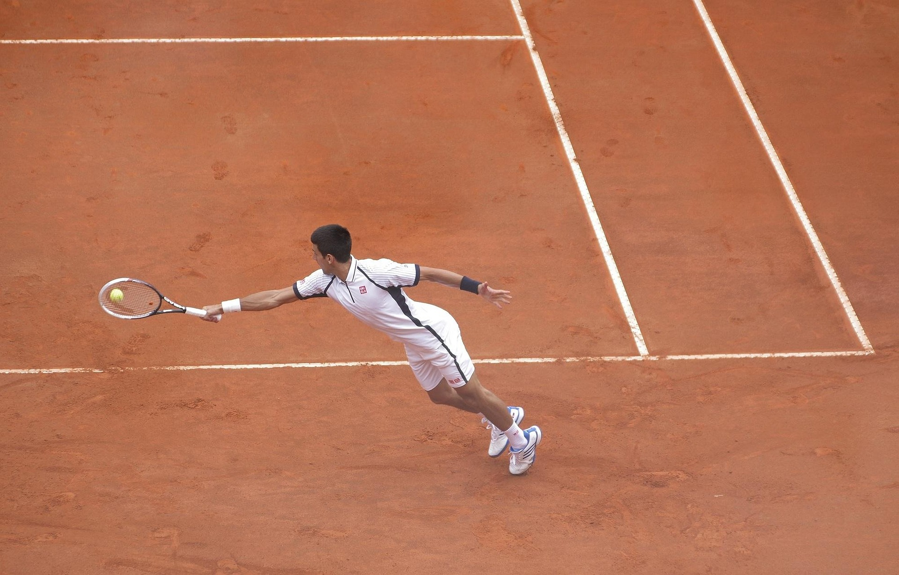
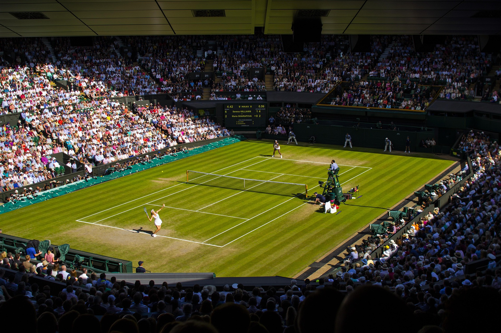
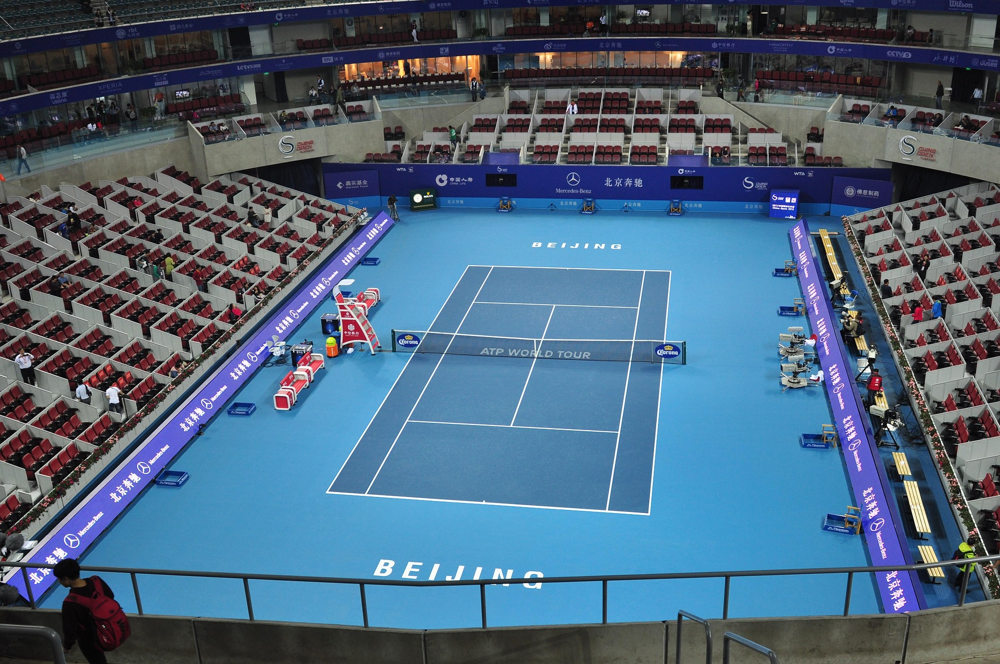

Court types
Tennis is played on a variety of surfaces, but the four most common types of tennis courts are clay, hard, grass, and carpet. Each surface has its own unique characteristics that can affect the speed and bounce of the ball, as well as the style of play. Carpet courts are like hard courts, but with a softer surface.
Clay
Clay courts are made of crushed brick, shale, or stone. They are slower than other surfaces and produce a higher bounce, which can make it more difficult to hit winners. Clay courts are also more physically demanding, as players must slide into their shots.
Well known clay court tournaments are the French Open and the Monte Carlo Masters. The most famous clay court is Roland Garros in Paris, France.

Grass
Grass courts are the fastest type of tennis court. They produce a low bounce and are very slippery. This makes them challenging to play on, as players must be very careful when moving around the court. Grass courts are also more prone to damage from weather and wear.
Well known grass court tournaments are Wimbledon and the Queen's Club Championships. The most famous grass court is the All England Lawn Tennis and Croquet Club in London, England.

Hard courts
Hard courts are made of concrete, asphalt, or other solid materials. They are faster than clay courts and produce a lower bounce.
Well known hard court tournaments are the US Open and the Australian Open. The most famous hard court is the Flushing Meadows-Citi Field in New York, USA.
